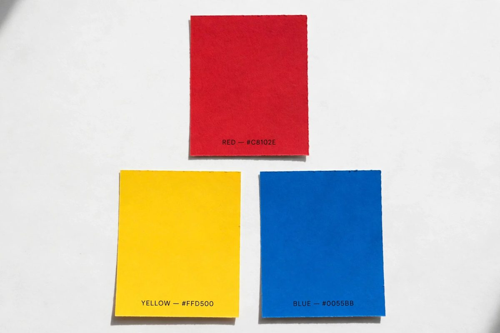

HEX vs RGB vs HSL Explained

HEX, RGB and HSL all describe the same colors in different ways. Learn what each format means and when to use it.
What HEX really means
A HEX code is a compact way to write an RGB color. The six characters after the hash are three pairs of hexadecimal digits: the first pair is red, the second green, the third blue. The code #FF0000 means full red, no green, no blue. Hexadecimal uses digits 0 to 9 and letters A to F, so FF equals 255 in decimal. Web designers love HEX because it is short, easy to copy, and works everywhere in CSS. Three-character shorthand like #F00 means the same as #FF0000.
How RGB works
RGB describes a color as three numbers from 0 to 255, one for each light channel: red, green and blue. The notation rgb(108, 76, 241) is the same color as #6C4CF1. RGB is the natural language of screens, because screens mix red, green and blue light to make every color you see. It is also the format you meet when a design tool shows sliders, and it maps directly to the numbers your code uses when drawing with canvas or image filters.
Why HSL feels more human
HSL stands for hue, saturation and lightness. Hue is the color's position on a wheel, measured in degrees from 0 to 360, so red is 0, green is 120 and blue is 240. Saturation is how vivid the color is, and lightness is how close it is to black or white. HSL is easier to reason about: to make a color lighter you raise lightness, to make a softer version you lower saturation, and the hue stays the same. That makes it ideal for building palettes.
Converting between formats
All three formats describe the same underlying color, so conversion is exact arithmetic, not guesswork. Our converters on this site do the maths for you, but it helps to know the idea: HEX to RGB is a base-16 conversion, and RGB to HSL involves finding the largest and smallest channel and deriving hue from their difference. Because the maths is exact, you can store a color in one format and convert freely without losing information.
Which format should you use?
Use HEX in CSS for brevity, RGB when you need an alpha channel with rgba(), and HSL when you are designing palettes or adjusting lightness in code. Many teams keep a single source of truth, such as HEX values in a style guide, and convert only when a specific tool needs another format. Consistency matters more than the format itself: pick one for your documentation and stick to it.
Alpha channels and transparency
All three formats have a transparent variant: HEX with eight digits, RGBA and HSLA. The alpha value runs from 0, fully transparent, to 1, fully opaque, and it lets a color blend with whatever sits behind it. Transparency is useful for overlays, shadows and hover states, but it changes the effective color, so a semi-transparent dark blue over a white background looks lighter than the same blue at full opacity. When you need an exact color, use the solid format; when you need a color that adapts to its background, use the alpha variant and test it on every background it will sit over.
Frequently asked questions
Is HEX the same as RGB?
Yes, in effect. A HEX code is just RGB values written in hexadecimal. #6C4CF1 and rgb(108, 76, 241) are the identical color.
What is HSLA?
HSLA is HSL with an alpha channel for transparency, written as hsla(258, 86%, 62%, 0.5). The alpha value runs from 0 (fully transparent) to 1 (fully opaque).
Do browsers support all three?
Yes. Every modern browser supports HEX, RGB, RGBA, HSL and HSLA in CSS, so you can use whichever is clearest in your code.
What is an 8-digit HEX code?
It is a HEX code with two extra digits for transparency, such as #6C4CF180, where the last pair is the alpha value. Support is good in modern browsers.
Try the tools
HEX to RGB Converter
Convert a HEX color code into its red, green and blue values, instantly and in your browser.
RGB to HEX Converter
Convert red, green and blue values (0-255) into a HEX color code you can use in CSS.
Palette Generator
Pick a base color and generate complementary, analogous, triadic and monochromatic palettes.
Contrast Checker
Check the WCAG contrast ratio between a text color and a background color, with AA and AAA verdicts.
More guides
 Building a Color Palette from Scratch
Building a Color Palette from Scratch Color Contrast and Accessibility Guide
Color Contrast and Accessibility Guide Color Psychology in Design
Color Psychology in Design Choosing Brand Colors
Choosing Brand Colors Warm vs Cool Colors
Warm vs Cool Colors Color Harmony Rules for Beginners
Color Harmony Rules for Beginners Using a Color Picker Tool Effectively
Using a Color Picker Tool Effectively Monochromatic Color Schemes
Monochromatic Color Schemes Complementary Colors: A Complete Guide
Complementary Colors: A Complete Guide Analogous Colors in Design
Analogous Colors in Design
Triadic Color Schemes Explained Color Trends for 2026
Color Trends for 2026 Picking Colors for Dark Mode
Picking Colors for Dark Mode Color-Blind Friendly Design
Color-Blind Friendly Design Gradient Colors: A Practical Guide
Gradient Colors: A Practical Guide Seasonal Color Palettes
Seasonal Color Palettes Color Mistakes Beginners MakeNaming Colors in CSS
Color Mistakes Beginners MakeNaming Colors in CSS